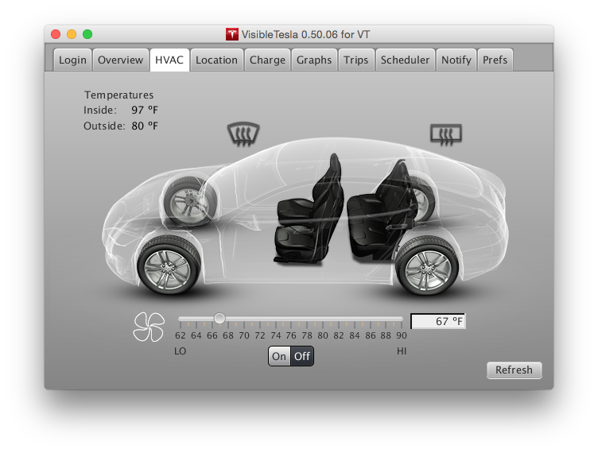

The HVAC Tab
HVAC stands for Heating, Ventilation, and Air Conditioning and this tab allows you to monitor and control those functions. It allows you to turn the system on or off and set the target temperature. It will display the status of the front and rear defrosters, but it cannot control them. The fan blades will fill in to give an indication of how fast the fan is blowing. All empty is off, all full is maximum, and partially full are levels in between.
A temperature slider allows the user to select a specific target temperature for the vehicle. Unlike the car's internal controls, rather than clicking the up or down arrows to increase or decrease the temperature, the user simply moves the slider to the desired temperature. When the car is in Celsius mode, the slider ranges from 17 (LO) to 32 (HI) degrees and has steps at every half degree (18, 18.5, 19, 19.5, etc.). When the car is in Fahrenheit mode, the slider ranges from 62 (LO) to 90 (HI) degrees with stops at every degree. VisibleTesla displays the numeric temperature corresponding to the slider position in real time as the slider moves, however, the app only sends a command to the car when the user stops moving the slider. This reduces unnecessary communication with Tesla's servers and with the car.
When the app first launches and you view the HVAC Tab, it may not yet have communicated with your car to determine the current temperature setting. In this case it will show a default setting momentarily and then it will be updated to reflect the actual temperature. Also, the temperature slider controls both the driver and passenger side temperature simultaneously. If you had previously set them to independent values, using the slider will cause them both to be changed to the same value.
This tab also displays the current interior and exterior temperature readings when they are available. The vehicle does not always supply this information. If no temperature readings are available, the tab will display "..." in place of the reading. It is not known when the vehicle decides to provide temperature readings and for how long. It is the case that if you activate the HVAC system, the readings will be made available and will remain available for an indeterminate period after the HVAC system is turned off.
The HVAC system can also be turned on and off at specified times using the Scheduler Tab. For example, a user may wish to have the car warm itself up starting at 07:45 so that it will be warm when she leaves for work at 08:00. Note that the temperature target can not be adjusted from the scheduler. It must be set in advance.